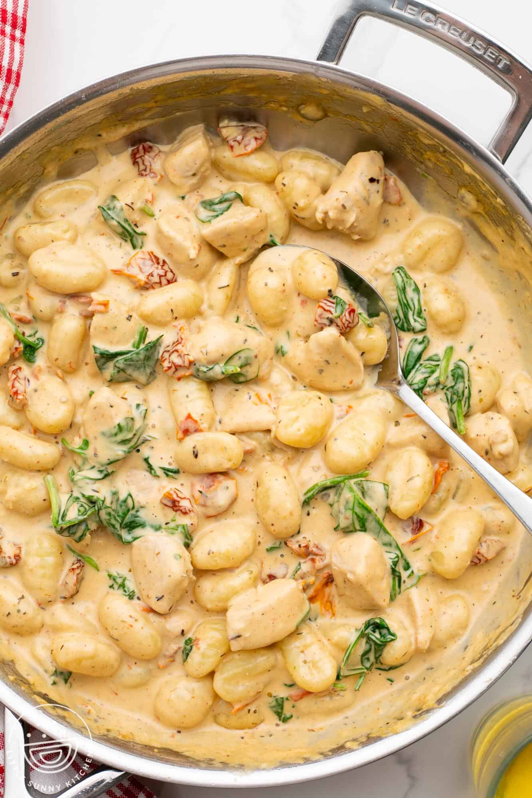

One Pan Chicken Gnocchi

Enjoy this delicious meal!
This creamy chicken gnocchi cooks in one pan, from chicken to veggies to creamy sauce, and uses convenient store-bought gnocchi. It’s a versatile recipe, and can be the perfect meal to use up scraps of most vegetables.
Ingredients
- Chicken
- Gnocchi
- Vegetables
- Cream sauce
Steps
- Heat oil and butter in a heavy skillet over medium heat. Slice chicken breasts in half horizontally to create thin breasts. Sprinkle with seasonings.
- Place chicken in the skillet and cook until golden brown on each side, about 4 minutes. Remove chicken to a plate and keep warm.
- In the same skillet, melt butter. Add gnocchi and season with salt and pepper. Cook until gnocchi is golden, 6 to 7 minutes. Remove gnocchi to a bowl.
- Add broccoli, zucchini, squash, mushrooms, and bell pepper and season with Italian seasoning. Saute until vegetables are crisp and tender, 5 to 7 minutes, depending on the thickness of the vegetables. Add minced garlic during the last 45 seconds; quickly saute until fragrant. Remove vegetables to the same bowl with gnocchi.
- Melt 2 teaspoons butter in the same skillet; and cook shallot until softened and fragrant, about 3 minutes. Pour in chicken broth, half-and-half, and heavy cream. Whisk in flour, and cook, whisking to prevent lumps, until thickened, about 3 minutes. Squeeze in lemon juice to taste.
- Combine gnocchi and vegetables with cream sauce, and top with cooked chicken.